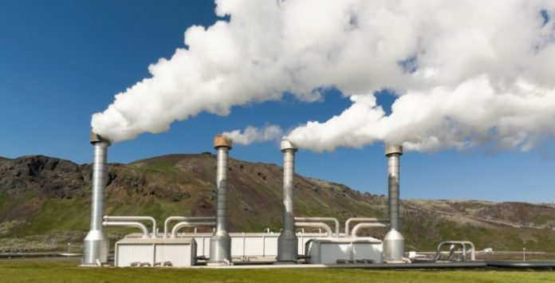

Energia Biocombustiveis e Geotérmica
Biocombustíveis
Os Biocombustíveis, como o próprio nome já indica, são um tipo de combustível de origem biológica ou natural.
Trata-se de uma fonte renovável de energia que é utilizada por meio da queima da biomassa ou de seus derivados, tais como o etanol (álcool para combustível), o biodiesel, biogás, o óleo vegetal e outros.
A biomassa é tida como qualquer material de constituição orgânica que pode ser empregado para algum tipo de produção de energia. Assi, os biocombustíveis correspondem a uma das formas sob as quais a biomassa pode ser empregada, além de serem tidos como uma alternativa econômica e ambiental para reduzir a queima dos combustíveis fósseis
Vantagens e Desvantagens
As vantagens dos biocombustíveis são várias: menor índice de poluição com a sua queima e processamento; podem ser cultivados e, portanto, são renováveis; geram empregos em sua cadeia produtiva; diminuem a dependência em relação aos combustíveis fósseis; além de aumentarem os índices de exportações do país, favorecendo a balança comercial.
Por outro lado, entre as desvantagens dos biocombustíveis, podemos mencionar: a necessidade de amplas áreas agricultáveis, podendo intensificar o desmatamento pela expansão da fronteira agrícola; pressão sobre o preço dos alimentos, que podem ter sua produção diminuída para à produção de biomassa; entre outros fatores.
Energia geotérmica
A Energia Geotérmica (ou Energia Geotermal) é um tipo de energia renovável obtida atráves do calor proveniente do interior do planeta terra.
O processo de aproveitamento dessa energia é feito por meio de grandes perfurações no solo, visto que o calor do nosso planeta existe numa parte abaixo da superfície da Terra.

A energia geotérmica ou geotermal é originada do calor proveniente do interior da Terra. A Terra é constituída por camadas, sendo o núcleo a parte mais profunda, a camada seguinte é o manto, onde se encontra o magma (rochas derretidas devido às altas temperaturas). A crosta é a camada mais superficial. Em alguns locais esse calor da Terra está mais próximo da superfície do que em outros, o que facilita sua utilização.
A água dos reservatórios subterrâneos é aquecida quando entra em contato com o magma. Em alguns locais essa água quente sobe até a superfície terrestre e forma pequenos lagos. Mas geralmente abrem-se poços para que a água e o vapor dos reservatórios sejam drenados até a superfície. Esta água naturalmente aquecida pode ser utilizada de diversas formas, como, por exemplo, nos processos industriais e no aquecimento de ambientes, piscinas, estufas de agricultura e lagos de aquicultura. Estas formas de aproveitamento representam o uso direto de calor geotérmico, sendo que as fontes geotérmicas de baixas temperaturas (35 a 148°C) são as mais indicadas para este tipo de utilização.
Vantagens e Desvantagens
Entre as vantagens da utilização da energia geotérmica estão: é considerada limpa e renovável; a emissão de gases poluentes é praticamente nula; apesar das perfurações, não há desgaste no solo; as variações climáticas não interferem na produção de energia; é uma energia barata; o fluido extraído pode ser reinjetado na Terra; pode ser uma ótima alternativa para comunidades isoladas; a área necessária para instalação da usina é pequena.
As principais desvantagens são: liberação de ácido sulfídrico (H2S), que é extremamente nocivo à saúde humana; os vapores liberados aumentam a temperatura local; necessidade de altos investimentos para a instalação da usina; poluição sonora na fase de perfuração dos poços; é bastante restrita, podendo ser utilizada apenas em locais específicos; possível contaminação de rios e lagos pelos fluidos térmicos.